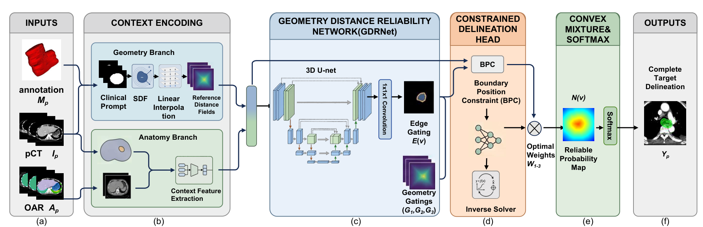

Under review
Prompt-conditioned three-dimensional clinical target volume delineation with geometric guidance
Planning CT, anatomical context and a few complete target contours are combined to complete a three-dimensional CTV. The method learns bounded mixtures of deterministic geometric candidates and restores every supplied contour plane exactly.
在少量完整轴向轮廓的条件下，结合规划 CT 与解剖信息完成三维临床靶区。主要结果及提示预算分析见个人主页。
Manuscript under review

Project resources
The project repository is being prepared. A public manuscript link will be added when available.